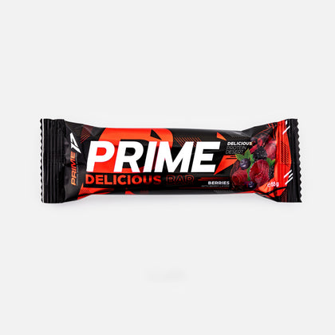
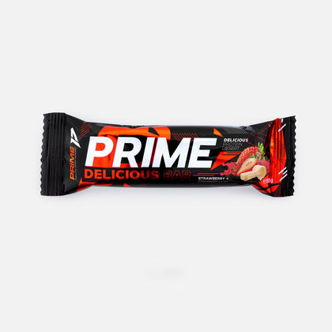
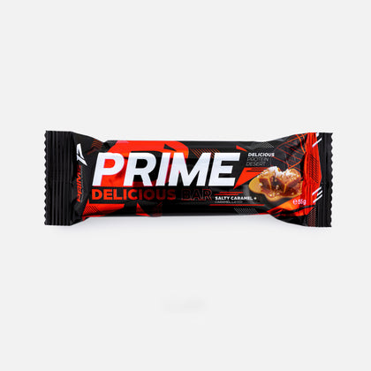
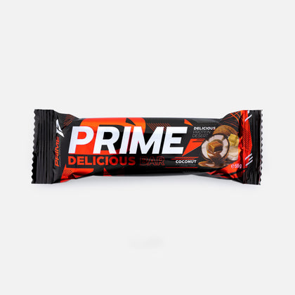

Front-desk star
Prime Delicious Bar
protein bar, 55 g · box of 12
Coated protein bar: the protein snack for after training or on the go.



- Who it is for
- All members, including those who don't take supplements. The easiest product to sell at the front desk.
- When to take it
- After training or as a snack between meals, when there is no time for a proper meal.
- What to say at the desk
- “Have you eaten anything after your workout? We have the Prime bar, with protein, in four flavours. Salted caramel is the gym's favourite.”
- Where to display it
- On the counter, next to the till, with all four flavours in sight. Restock daily.